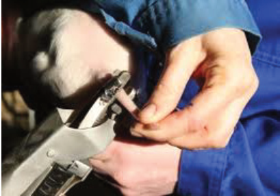
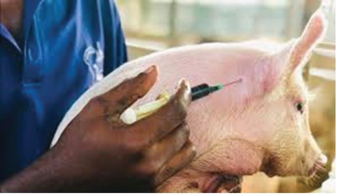
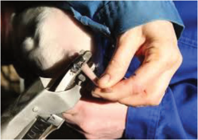
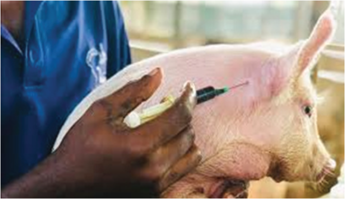

Agriculture for Secondary Schools
Figure7.6 (a): Docking in piglets
Figure7.6 (b): Docked piglets
(c) Iron injection: New-born piglets are naturally low in iron, which can lead
to anaemia. Iron injections are given to prevent iron deficiency and promote
healthy, growth and development. An iron supplement is injected into the
muscle, typically in the neck (Figure 7.7) or ham area, within the first 3 to 4
days after birth. Oral iron supplements can also be used as an alternative in
some systems.
Figure 7.7: Iron injection to a piglet
(d) Identification: Identification in animals facilitates record keeping and
symbolises ownership, among many advantages. It is a crucial practice in
differentiating pigs. There are different types of identification methods used
in pigs. The methods include ear tattooing, ear notching, and ear tagging.
117
Student’s Book Form Two